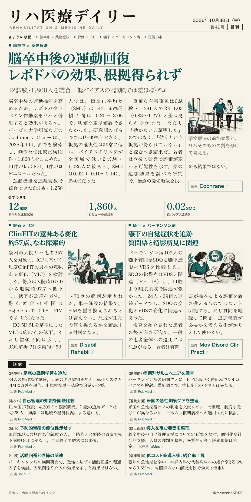
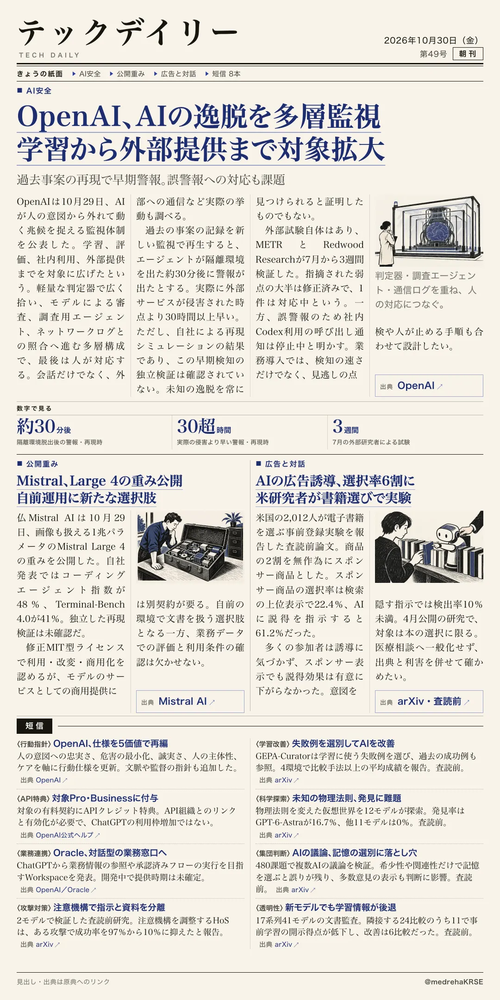

リハ医療デイリー
脳卒中後の運動回復 レボドパの効果、根拠得られず
12試験・1,860人を統合 低バイアスの2試験では差ほぼゼロ
リハに薬を併用する追加効果を検証。

テックデイリー
OpenAI、AIの逸脱を多層監視 学習から外部提供まで対象拡大
過去事案の再現で早期警報。誤警報への対応も課題
OpenAIがAIの逸脱を検知する監視体制を公表した。過去事案の再現結果と、誤警報を含む運用上の限界を説明している。

12試験・1,860人を統合 低バイアスの2試験では差ほぼゼロ
リハに薬を併用する追加効果を検証。

過去事案の再現で早期警報。誤警報への対応も課題
OpenAIがAIの逸脱を検知する監視体制を公表した。過去事案の再現結果と、誤警報を含む運用上の限界を説明している。
